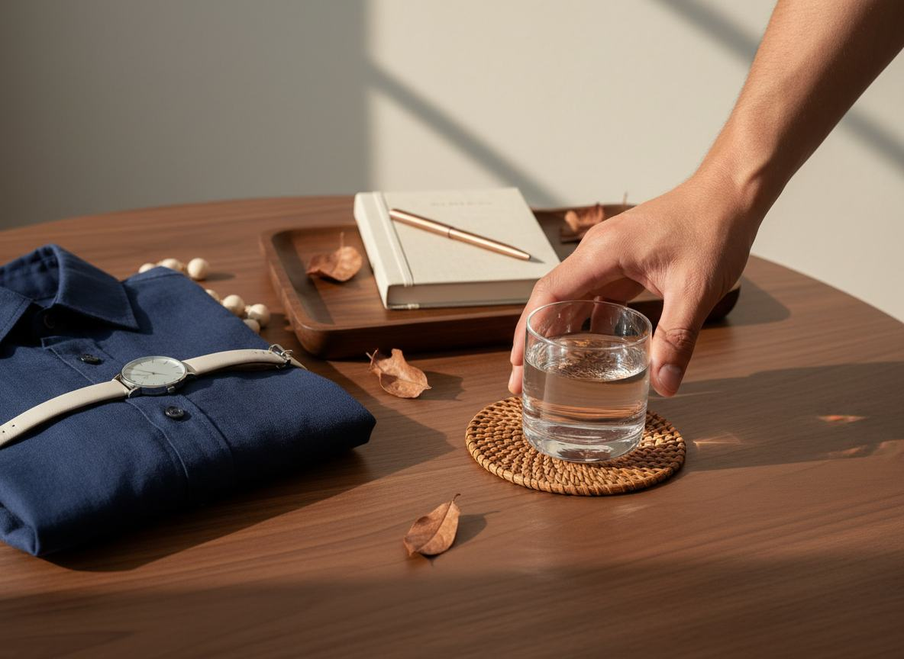

A QUIET OBSERVATION
Some men notice the change before they can name it.
It can show up in the middle of an ordinary morning — a little less ease, a little more hesitation, a feeling that does not quite match the man you know yourself to be.
A new editorial video looks at one overlooked part of the daily picture.
WATCH THE SHORT VIDEOA simple conversation about a detail many men quietly ignore.
Not every important change arrives loudly.
THE QUESTION
What if the answer is less about pushing harder?
Men are often told to ignore the small signals, stay busy and wait for things to feel normal again. But the body can be more perceptive than the calendar.
This short video follows a different line of thought — one that begins with an everyday ingredient and a routine that has been quietly passed around for years.
“The most useful clue may be the one that looks too ordinary.”SEE THE DETAIL THEY MISSED

THE PIECE TO NOTICE
Sometimes a familiar ritual carries a different meaning.
No dramatic promises. No complicated checklist. Just a closer look at a simple idea and why it has started a new conversation among men who want to feel more like themselves again.
WATCH THE FULL EXPLANATIONAdvertising disclosure: This is sponsored editorial content. The external video may contain a partner offer. No purchase is made on this page.
This page is for general informational and editorial purposes. It does not diagnose, treat, cure or prevent any disease, and it does not guarantee any particular personal outcome.